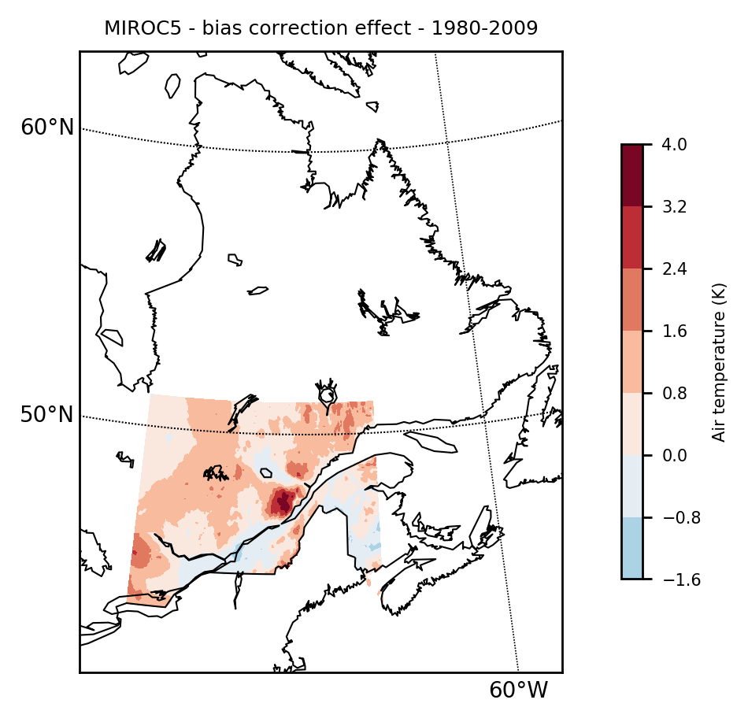
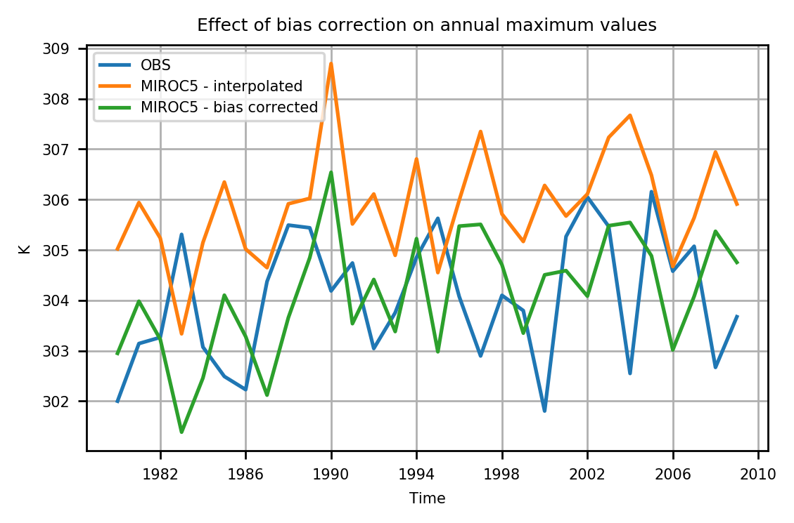

Examples
Typical workflow for a climate scenario
Note. Climate data can be downloaded at ESGF nodes
Note 2. The following example is somewhat convoluted, but it gives an overview of the main steps allowed by ClimateTools package.
Exploration
First step before extracting the data is to explore the actual dataset at hand. The function Dataset (reexported from te NCDatasets.jl package) is used to examine the file(s). In this example, the simulation is from the MIROC5 model.
Dataset("datafile.nc")
Dataset: /path/to/file/tasmax_day_MIROC5_historical_r1i1p1_19900101-19991231.nc
Group: /
Dimensions
time = 3650
lat = 128
lon = 256
bnds = 2
Variables
time (3650)
Datatype: Float64
Dimensions: time
Attributes:
bounds = time_bnds
units = days since 1850-1-1
calendar = noleap
axis = T
long_name = time
standard_name = time
time_bnds (2 × 3650)
Datatype: Float64
Dimensions: bnds × time
lat (128)
Datatype: Float64
Dimensions: lat
Attributes:
bounds = lat_bnds
units = degrees_north
axis = Y
long_name = latitude
standard_name = latitude
lat_bnds (2 × 128)
Datatype: Float64
Dimensions: bnds × lat
lon (256)
Datatype: Float64
Dimensions: lon
Attributes:
bounds = lon_bnds
units = degrees_east
axis = X
long_name = longitude
standard_name = longitude
lon_bnds (2 × 256)
Datatype: Float64
Dimensions: bnds × lon
height
Attributes:
units = m
axis = Z
positive = up
long_name = height
standard_name = height
tasmax (256 × 128 × 3650)
Datatype: Float32
Dimensions: lon × lat × time
Attributes:
standard_name = air_temperature
long_name = Daily Maximum Near-Surface Air Temperature
units = K
original_name = T2
cell_methods = time: maximum
cell_measures = area: areacella
history = 2011-10-19T12:39:31Z altered by CMOR: Treated scalar dimension: 'height'. 2011-10-19T12:39:31Z altered by CMOR: replaced missing value flag (-999) with standard missing value (1e+20). 2011-10-19T12:39:31Z altered by CMOR: Inverted axis: lat.
coordinates = height
missing_value = 1.0e20
_FillValue = 1.0e20
associated_files = baseURL: http://cmip-pcmdi.llnl.gov/CMIP5/dataLocation gridspecFile: gridspec_atmos_fx_MIROC5_historical_r0i0p0.nc areacella: areacella_fx_MIROC5_historical_r0i0p0.nc
Global attributes
institution = AORI (Atmosphere and Ocean Research Institute, The University of Tokyo, Chiba, Japan), NIES (National Institute for Environmental Studies, Ibaraki, Japan), JAMSTEC (Japan Agency for Marine-Earth Science and Technology, Kanagawa, Japan)
institute_id = MIROC
experiment_id = historical
source = MIROC5 2010 atmosphere: MIROC-AGCM6 (T85L40); ocean: COCO (COCO4.5, 256x224 L50); sea ice: COCO (COCO4.5); land: MATSIRO (MATSIRO, L6); aerosols: SPRINTARS (SPRINTARS 5.00, T85L40)
model_id = MIROC5
forcing = GHG, SA, Oz, LU, Sl, Vl, SS, Ds, BC, MD, OC (GHG includes CO2, N2O, methane, and fluorocarbons; Oz includes OH and H2O2; LU excludes change in lake fraction)
parent_experiment_id = piControl
parent_experiment_rip = r1i1p1
branch_time = 150015.0
contact = Masahiro Watanabe (hiro@aori.u-tokyo.ac.jp), Seita Emori (emori@nies.go.jp), Masayoshi Ishii (ism@jamstec.go.jp), Masahide Kimoto (kimoto@aori.u-tokyo.ac.jp)
references = Watanabe et al., 2010: Improved climate simulation by MIROC5: Mean states, variability, and climate sensitivity. J. Climate, 23, 6312-6335
initialization_method = 1
physics_version = 1
tracking_id = 54e617f1-31a5-47fd-bd57-8736bb7d00ef
product = output
experiment = historical
frequency = day
creation_date = 2011-10-19T12:39:31Z
history = 2011-10-19T12:39:31Z CMOR rewrote data to comply with CF standards and CMIP5 requirements.
Conventions = CF-1.4
project_id = CMIP5
table_id = Table day (26 July 2011) f21c16b785432e6bd3f72e80f2cade49
title = MIROC5 model output prepared for CMIP5 historical
parent_experiment = pre-industrial control
modeling_realm = atmos
realization = 1
cmor_version = 2.7.1
You can see the dimensions of the data, as well as the name of the variable(s), in this case "tasmax".
Extraction
Now, say you need to create a climate scenario, using a given simulation, over a region defined by the following polygon.
poly_reg = [[NaN -65 -80 -80 -65 -65];[NaN 42 42 52 52 42]]
2×6 Array{Float64,2}:
NaN -65.0 -80.0 -80.0 -65.0 -65.0
NaN 42.0 42.0 52.0 52.0 42.0The extraction of the desired variable can be done with the load function, by providing the polygon.
gcmfiles =["tasmax_day_MIROC5_historical_r1i1p1_19800101-19891231.nc",
"tasmax_day_MIROC5_historical_r1i1p1_19900101-19991231.nc",
"tasmax_day_MIROC5_historical_r1i1p1_20000101-20091231.nc"]
model = load(gcm_files, "tasmax", poly=poly_reg)
ClimGrid struct with data:
3-dimensional AxisArray{Float32,3,...} with axes:
:lon, [-78.75, -77.3438, -75.9375, -74.5313, -73.125, -71.7188, -70.3125, -68.9063, -67.5, -66.0938]
:lat, [42.7233, 44.1241, 45.5249, 46.9256, 48.3264, 49.7271, 51.1279]
:time, Date[1980-01-01, 1980-01-02, 1980-01-03, 1980-01-04, 1980-01-05, 1980-01-06, 1980-01-07, 1980-01-08, 1980-01-09, 1980-01-10 … 2009-12-22, 2009-12-23, 2009-12-24, 2009-12-25, 2009-12-26, 2009-12-27, 2009-12-28, 2009-12-29, 2009-12-30, 2009-12-31]
And data, a 10×7×10950 Array{Float32,3}
Project: CMIP5
Institute: MIROC
Model: MIROC5
Experiment: historical
Run: r1i1p1
Variable: tasmax
Data units: K
Frequency: day
Global attributes: Dict{Any,Any} with 27 entries
Filename: tasmax_day_MIROC5_historical_r1i1p1_19800101-19891231.ncOne possible verification of the extracted data is to map the time-mean data with the mapclimgrid function to see if there is something wrong.
mapclimgrid(model, region = "Quebec")Which should return the following map.

Sidenote: merging files/data
Climate data files are usually on the order of multiple GBs and institution generally split a single simulation into multiple files. In order to calculate climatologies, it is thus essential to merge the data into a single structure. The function merge is provided to combine 2 ClimGrid.
C = merge(C1, C2) # merge C1 with C2The merge function is useful when you have 2 or 3 files. However, a single simulation can sometimes be splitted into yearly files. Hence, extracting timeseries on climatological timescales can imply loading more than a hundred files just to get a complete timeserie for a given gridpoint. The function load has a method where the 1st positional argument is an Array of strings (as opposed to a single string).
C = load(strarray::Array{String,1}, variable::String; poly, start_date::Tuple, end_date::Tuple, data_units::String))This is how the MIROC5 simulation has been loaded.
Bias correction
An important step in climate scenarios design is to correct the statistical bias of the simulations compared against a chosen reference (more often than not, weather observations). A typical method is to do quantile-quantile mapping between the simulation timeseries and observed timeseries. The function qqmap does so. First step would be to interpolate the simulated field onto the reference grid. Here we use the dataset provided by the Canadian Forest Service (McKenney et al. 2011) for the interpolation step and the bias correction step.
McKenney, D. W., Hutchinson, M.F., Papadopol, P., Lawrence, K., Pedlar, J., Campbell, K., Milewska, E., Hopkinson, R., Price, D., Owen, T. (2011). "Customized spatial climate models for North America." Bulletin of American Meteorological Society-BAMS December: 1612-1622.
obsfiles = ["nrcan_canada_daily_tasmax_1950.nc",
"nrcan_canada_daily_tasmax_1951.nc",
"nrcan_canada_daily_tasmax_1952.nc",
"nrcan_canada_daily_tasmax_1953.nc",
"nrcan_canada_daily_tasmax_1954.nc",
"nrcan_canada_daily_tasmax_1955.nc",
"nrcan_canada_daily_tasmax_1956.nc",
"nrcan_canada_daily_tasmax_1957.nc",
"nrcan_canada_daily_tasmax_1958.nc",
"nrcan_canada_daily_tasmax_1959.nc",
"nrcan_canada_daily_tasmax_1960.nc",
"nrcan_canada_daily_tasmax_1961.nc",
"nrcan_canada_daily_tasmax_1962.nc",
"nrcan_canada_daily_tasmax_1963.nc",
"nrcan_canada_daily_tasmax_1964.nc",
"nrcan_canada_daily_tasmax_1965.nc",
"nrcan_canada_daily_tasmax_1966.nc",
"nrcan_canada_daily_tasmax_1967.nc",
"nrcan_canada_daily_tasmax_1968.nc",
"nrcan_canada_daily_tasmax_1969.nc"]
obs = load(obsfiles, "tasmax", poly=poly_reg)mapclimgrid(obs, region = "Quebec", titlestr="Gridded Obs, 1980-2009")
Interpolation / Regridding
The interpolation is done with the regrid function. The following command interpolate the values of ClimGrid model onto the grid of ClimGrid obs.
modelinterp = regrid(model, obs)
Progress: 100%|█████████████████████████████████████████| Time: 0:00:38
ClimGrid struct with data:
3-dimensional AxisArray{Float64,3,...} with axes:
:lon, Float32[-79.9583, -79.875, -79.7917, -79.7083, -79.625, -79.5417, -79.4583, -79.375, -79.2917, -79.2083 … -65.7917, -65.7083, -65.625, -65.5417, -65.4583, -65.375, -65.2917, -65.2083, -65.125, -65.0417]
:lat, Float32[51.9583, 51.875, 51.7917, 51.7083, 51.625, 51.5417, 51.4583, 51.375, 51.2917, 51.2083 … 42.7917, 42.7083, 42.625, 42.5417, 42.4583, 42.375, 42.2917, 42.2083, 42.125, 42.0417]
:time, Date[1980-01-01, 1980-01-02, 1980-01-03, 1980-01-04, 1980-01-05, 1980-01-06, 1980-01-07, 1980-01-08, 1980-01-09, 1980-01-10 … 2009-12-22, 2009-12-23, 2009-12-24, 2009-12-25, 2009-12-26, 2009-12-27, 2009-12-28, 2009-12-29, 2009-12-30, 2009-12-31]
And data, a 180×120×10950 Array{Float64,3}
Project: CMIP5
Institute: MIROC
Model: MIROC5
Experiment: historical
Run: r1i1p1
Variable: tasmax
Data units: K
Frequency: day
Global attributes: Dict{Any,Any} with 27 entries
Filename: tasmax_day_MIROC5_historical_r1i1p1_19800101-19891231.ncjulia> mapclimgrid(modelinterp, region = "Quebec", titlestr="MIROC5 - Interpolated - 1980-2009")
Notice that there is no new information created here. The interpolation is using Scipy's griddata under the hood and is simply a linear interpolation onto the obs grid.
Quantile-quantile mapping
The high-resolution local information is integrated into ClimGrid modelinterp at the bias correction step. There is a daily transfer function applied on a quantile basis.The call signature is qqmap(obs, ref, fut) where the transfer function is estimated between obs and ref and applied on fut. Note that ref and fut can be the same, as in this example. A typical use-case would be obs and ref covering the same (historical, e.g. 1961-2010) temporal window and fut being a simulation covering a future climatological period (which could be a mix of historic and future, such as 1961-2090). This step is computationally intensive (uses of multiple threads can help here if set by the user).
model_qqmap = qqmap(obs, modelinterp, modelinterp)
Progress: 100%|█████████████████████████████████████████| Time: 0:11:20
ClimGrid struct with data:
3-dimensional AxisArray{Float64,3,...} with axes:
:lon, Float32[-79.9583, -79.875, -79.7917, -79.7083, -79.625, -79.5417, -79.4583, -79.375, -79.2917, -79.2083 … -65.7917, -65.7083, -65.625, -65.5417, -65.4583, -65.375, -65.2917, -65.2083, -65.125, -65.0417]
:lat, Float32[51.9583, 51.875, 51.7917, 51.7083, 51.625, 51.5417, 51.4583, 51.375, 51.2917, 51.2083 … 42.7917, 42.7083, 42.625, 42.5417, 42.4583, 42.375, 42.2917, 42.2083, 42.125, 42.0417]
:time, Date[1980-01-01, 1980-01-02, 1980-01-03, 1980-01-04, 1980-01-05, 1980-01-06, 1980-01-07, 1980-01-08, 1980-01-09, 1980-01-10 … 2009-12-22, 2009-12-23, 2009-12-24, 2009-12-25, 2009-12-26, 2009-12-27, 2009-12-28, 2009-12-29, 2009-12-30, 2009-12-31]
And data, a 180×120×10950 Array{Float64,3}
Project: CMIP5
Institute: MIROC
Model: MIROC5
Experiment: historical
Run: r1i1p1
Variable: tasmax
Data units: K
Frequency: NA
Global attributes: Dict{Any,Any} with 0 entries
Filename: tasmax_day_MIROC5_historical_r1i1p1_19800101-19891231.ncMapping the results show that the local information is integrated into the model, and that the natural "mask" of the observation grid is applied naturally.
mapclimgrid(model_qqmap, region = "Quebec", titlestr="MIROC5 - Interpolated and Quantile-Quantile corrected - 1980-2009")
Proper assessment of future climate conditions over the specified region would involve replicating these steps for minimally a dozen simulations from multiple models and different emission scenarios (e.g. RCP4.5, RCP8.5, etc.).
We can show the effect of bias correction by simply subtracting model_qqmap from modelinterp.
mapclimgrid(modelinterp-model_qqmap, region = "qc", titlestr="MIROC5 - bias correction effect - 1980-2009", center_cs=true)
Climate indices
Once the climate data is downscaled (interpolation and bias correction) to the proper scale, the user can compute climate indices. For example, annual maximum values of daily maximum temperature could be desired (annualmax).
annmax = annualmax(model_qqmap)The return value of climate indices functions are another ClimGrid, but at the yearly scale in the case of annual maximum. Maps and timeseries can be plotted with mapclimgrid and plot respectively.
Here's the effect of bias correcting on annual maximum values.
max_obs = annualmax(obs)
max_modelinterp = annualmax(modelinterp)
max_modelqqmap = annualmax(model_qqmap)
# Plots
plot(max_obs, label="OBS")
plot(max_modelinterp, label="MIROC5 - interpolated")
plot(max_modelqqmap, label="MIROC5 - bias corrected", titlefig = "Effect of bias correction on annual maximum values")
Exporting
Once calculations are done, results can be written to disk to a netCDF file with the write command. Here, we export the annual maximum values of the bias corrected model to the current folder.
write(max_modelqqmap, "annualmax_model_qqmap.nc")